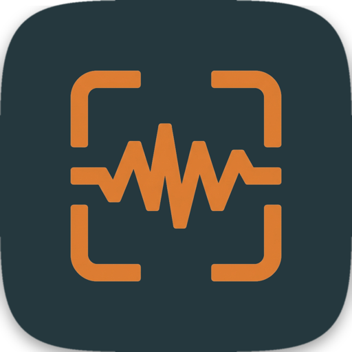

Talksh●t
You see it. You say it.
Your AI acts on it.
Talkshot lives in your macOS menu bar. Screenshot what you're looking at, cursor circled in red, narrate the issue, and get structured, timestamped Markdown your AI coding agent can execute against immediately. All on-device. Nothing leaves your Mac.
macOS 14 (Sonoma) or later · Apple Silicon & Intel
or brew install --cask flowsxr/talkshot/talkshot
How it works
Three steps from bug report to AI fix.
Record your screen and voice in one motion. Talkshot handles the rest.
notes.md into Claude Code or Cursor. Your agent sees what you saw, reads what you said.Why it matters
Feedback without the friction.
Stop retyping what you already see.
Screenshots alone lose intent ("what's wrong with this?"). Voice notes alone lose visual context. Talkshot captures both, cursor position, cropped region, and your spoken note, so your AI agent gets the same context a human coworker would.
Faster than typing out a bug report.
You talk at ~150 words per minute. You type at ~60. A two-minute narration gives your AI agent more precise context than ten minutes of writing. Hit the hotkey, say what's wrong, move on.
Everything stays on your Mac.
Apple's Speech framework runs entirely on-device. No cloud, no API keys, no telemetry. The screenshots never leave your disk. Talkshot is a native macOS app, no Electron, no browser, no network calls.
Under the hood
Built for developers who read source.
-
ScreenCaptureKit (macOS 14+)
High-performance screen capture with proper permission handling. No subprocess
screencapturehacks, direct framebuffer access. -
On-device transcription
Apple's Speech framework for local, private transcription. Also supports
mlx-whispervia the Python CLI for larger model options. - Cursor-aware captures Every screenshot draws a red circle at your cursor position. A cropped, zoomed region around the cursor is saved alongside the full screen, your agent knows exactly where you were pointing.
- Structured Markdown output Each note is a self-contained record: timestamp, cursor position (points + pixels), full screenshot, cropped region, and transcribed text. Ready for any LLM to consume.
- Menu bar native SwiftUI MenuBarExtra app. No dock icon. No browser tab. Respects macOS dark/light mode automatically.
# Session 20260704-142141
## Note 1 (2026-07-04T14:22:03Z)
Cursor at [847, 392] (screen points)


> The login button on mobile is way too small.
> The tap target overlaps with the "Forgot
> password" link, users keep hitting the wrong
> thing. Should have at least 44px height.
## Note 2 (2026-07-04T14:23:15Z)
Cursor at [120, 560] (screen points)


> The nav highlight is stuck on Dashboard
> even though I'm on Settings. Active state
> isn't updating on route change.Get started
Build from your terminal.
Prefer a prebuilt binary? brew install --cask flowsxr/talkshot/talkshot installs the same notarized, Developer ID-signed build shown below — no Xcode required.
Talkshot is a native Swift app that builds clean with xcodegen. The default build produces a locally-signed app, fine for running on your own Mac. For distribution, a separate release build pipeline handles Developer ID signing and notarization.
Also included: a Python CLI (talkshot.py) that does the same thing without the native menu bar UI. Useful for scripting, or if you want to swap in a different transcription model like mlx-whisper.
Session output
Structured, timestamped, agent-ready.
Every session is a self-contained folder on your Desktop. Drag any file into your AI coding agent.
talkshot-session-20260704-142141/
├── shot_001.png # full screen, cursor circled
├── crop_001.png # zoomed region around cursor
├── shot_002.png # next note
├── crop_002.png
├── notes.json # structured entries
└── notes.md # paste this into your agentIntegrations
Works where your agents work.
Claude Code
Paste notes.md straight into a Claude Code session. Claude reads the timestamped screenshots and transcripts as structured context, no more "the thing next to the other thing."
Cursor & Windsurf
Drop the session folder into your project. Cursor and Windsurf read Markdown natively, they see your screenshots inline with your notes.
GitHub Copilot
Copy notes.md content into a Copilot Chat prompt. Screenshot references and cursor positions give Copilot the visual context it needs to suggest accurate fixes.
GitHub Issues & Linear
The structured Markdown works as a bug report out of the box. Paste into GitHub Issues or Linear, screenshots, cursor positions, and transcripts are all there.
Features
Everything you need. Nothing you don't.
Menu bar native
Lives in your menu bar. No dock icon, no browser tab, no Electron. Pure SwiftUI MenuBarExtra, lightweight and always available.
Cursor-aware screenshots
Red circle drawn at your cursor position. Cropped, zoomed region around the cursor saved alongside the full screen. Your agent knows exactly where you pointed.
On-device transcription
Apple's Speech framework runs entirely locally. No cloud, no API keys, no data leaving your Mac. Python CLI also supports mlx-whisper for larger models.
Session management
Multiple notes per session. Each note is a complete record, screenshot, crop, cursor position, transcript. Finish the session and it saves everything, opens the folder, starts fresh.
Global hotkeys
Ctrl+Option+N to take a note, Ctrl+Option+E to finish the session. Works from any app. Also available from the menu bar if you prefer clicking.
MIT licensed
Free as in freedom, free as in beer. No telemetry, no tracking, no analytics. The full source is on GitHub. Use it, fork it, ship it.
FAQ
Common questions.
What is Talkshot?
Does it need an internet connection?
mlx-whisper if you want a larger transcription model, still fully offline.
How is this different from just taking a screenshot and typing a note?
What AI coding agents work with Talkshot?
notes.md output with inline screenshot references is designed to be pasted directly into any LLM chat interface. Also works great as a bug report format for GitHub Issues and Linear.
What are the system requirements?
brew install xcodegen). The Python CLI works on Python 3.9+ with minimal dependencies.
Is Talkshot free?
Does it support multiple displays?
Can I change the hotkeys?
HotkeyService.swift under HotkeyConfig. In the Python CLI, they're at the top of talkshot.py under HOTKEYS. The default is Ctrl+Option+N for taking notes and Ctrl+Option+E for finishing sessions, chosen to avoid conflicts with Xcode and terminal shortcuts.
# Done → native/dist/Talkshot.app
# Grant Screen Recording +
# Microphone + Accessibility
# when prompted. Then: